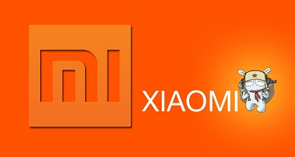

XIAOMI INC
Xiaomi termasuk anak baru dipersaingan smartphone di Indonesia, namun kamu-kamu pasti udah tahu kalau Xiaomi sudah mencuri perhatian sejak beberapa tahun lalu. Bahkan bisa bersaing dengan brand-brand yang lebih dulu sudah memiliki tempat dihati orang-orang Indonesia.
Di bawah ini adalah kelebihan hp xiaomi :
1.Harganya Murah
Mengapa Xiaomi menjadi brand yang sudah mencuri banyak hati orang Indonesia salah satunya ialah dengan memberikan produk dengan kualitas bagus dan mumpuni banget, Xiaomi juga memberikan harga yang begitu murah. Xiaomi bahkan sering dibilang sebagai brand yang ngerusak harga pasar. Kamu nggak percaya? Mungkin kamu bisa bandingin harga seri flagship Xiaomi dengan kompetitor-kompetitornya.
2.Dukungan Komunitas yang Kuat
Harga murah ngebuat Xiaomi memiliki banyak penggemar. Ya Xiaomi nggak cuma ngasih harga yang murah, tapi Xiaomi ngasih spesifikasi dan teknologi yang setara dengan brand-brand yang udah duluan terkenal. Penggunanya juga cukup loyal. Mereka bersatu dan membuat komunitas yang kuat yakni Mi Fans. Kemunculan komunitas Mi Fans ini menjadi salah satu strategi marketing Xiaomi. Hebatnya lagi, Xiaomi manjain banget user dan penggemarnya walaupun mereka tidak banyak melakukuan marketing di media. Salah satu servis yang dilakukan Xiaomi ke fansnya adalah diperbolehkannya me-root tanpa harus menghanguskan garansi. Dan Xiaomi melibatkan fansnya ini dalam peluncuran produknya.
3.MIUI
Hal keren lain yang dimiliki oleh Xiaomi adalah fitur MIUI. Apasih fitur MIUI itu? MIUI merupakan firmwire yang bisa dibilang OS berbasis Android. MIUI dikembangkan oleh Xiaomi berdasarkan Android 2.2X Froyo dan CyanogenMod 6. MIUI ini lebih dulu terkenal dibanding produknya dulu lho guys. Banyak penggemarnya yang suka sama tampilan antarmuka MIUI. Hal inilah yang membuat komunitasnya berkembang pesat. Selain itu, MIUI juga memiliki tampilan yang cantik kaya yang dimiliki iOS dan TouchWiz. Nggak heran juga sih orang suka banget sama Xiaomi.
4.Desain HP yang Elegan
Hal lain yang bikin penggemarnya kesengsem sama produk-produk Xiaomi adalah desainnya yang cantik dan elegan. Mereka nggak nyoba niru-niru desain HP dari produsen-produsen yang udah lebih dulu populer.